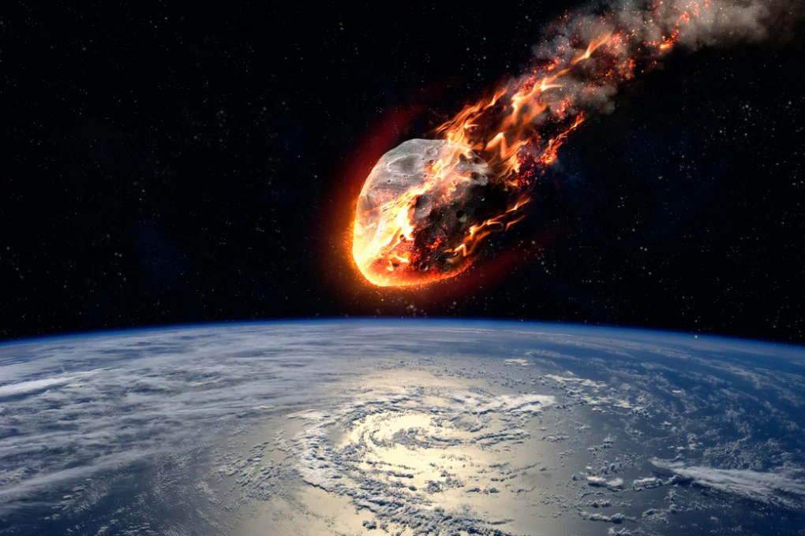
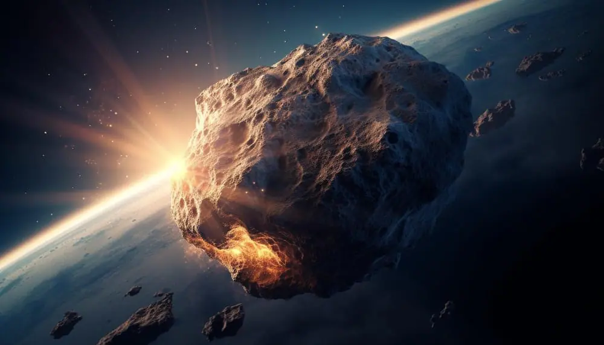

METEOROIDI
Origine e Composizione dei Meteoroidi
I meteoroidi sono piccoli frammenti di roccia e metallo che orbitano attorno al Sole. La loro origine può essere variata: molti sono detriti rilasciati da comete quando queste sublimano durante i passaggi ravvicinati al Sole, mentre altri provengono dalla collisione di asteroidi nella fascia principale tra Marte e Giove. I meteoroidi possono essere di diverse dimensioni, da minuscoli granelli di polvere cosmica a oggetti grandi diversi metri. La loro composizione varia in base alla loro origine, ma in genere sono composti da silicati, ferro, nichel e altri elementi metallici.
Interazione con l'Atmosfera Terrestre
Quando un meteoroide entra nell'atmosfera terrestre, l'attrito con l'aria genera calore, facendo sì che il meteoroide si riscaldi e bruci. Questo fenomeno produce una scia luminosa nel cielo, chiamata meteora o "stella cadente". La maggior parte dei meteoroidi si disintegra completamente prima di raggiungere la superficie terrestre. Tuttavia, i meteoroidi più grandi possono sopravvivere alla discesa e colpire il suolo come meteoriti. Questi impatti possono fornire importanti informazioni geologiche e chimiche, aiutando a comprendere meglio la composizione del sistema solare primordiale.
Sciami Meteorici e Importanza Scientifica
Gli sciami meteorici si verificano quando la Terra attraversa l'orbita di una cometa e passa attraverso i detriti lasciati dalla cometa stessa. Questi sciami possono produrre numerose meteore visibili all'ora, offrendo spettacoli celesti spettacolari. I più noti sciami meteorici includono le Perseidi, associate alla cometa Swift-Tuttle, e le Leonidi, associate alla cometa Tempel-Tuttle. Oltre al loro fascino visivo, lo studio dei meteoroidi e dei meteoriti è fondamentale per la scienza planetaria, poiché questi frammenti offrono un'occasione unica per analizzare direttamente materiali che risalgono alla formazione del sistema solare.

METEORE
Formazione delle Meteore
Le meteore sono il risultato dell'ingresso di meteoroidi nell'atmosfera terrestre. Quando un meteoroide, che è un frammento di roccia o metallo spaziale, penetra nell'atmosfera terrestre, l'attrito con le molecole d'aria genera calore intenso, causando la vaporizzazione del meteoroide. Questo processo produce una scia luminosa nel cielo, comunemente chiamata "stella cadente". La luminosità di una meteora dipende dalla dimensione, composizione e velocità del meteoroide. La maggior parte delle meteore che vediamo sono causate da meteoroidi di piccole dimensioni, spesso non più grandi di un granello di sabbia.
Diversi Tipi di Meteore
Le meteore possono essere classificate in diversi tipi in base alla loro origine e alle caratteristiche visibili. Le meteore sporadiche sono meteore singole che possono apparire in qualsiasi momento e da qualsiasi direzione. Al contrario, le meteore appartenenti agli sciami meteorici provengono da detriti lasciati da comete lungo le loro orbite e appaiono in periodi specifici dell'anno, quando la Terra attraversa questi percorsi di detriti. Gli sciami meteorici, come le Perseidi e le Leonidi, sono noti per le loro alte frequenze di meteore visibili, offrendo spettacolari "piogge di meteore". Alcune meteore possono essere particolarmente brillanti e vengono chiamate bolidi o fireball, spesso lasciando dietro di sé scie persistenti visibili per diversi minuti.
Importanza Scientifica delle Meteore
Le meteore forniscono agli scienziati informazioni cruciali sul materiale presente nello spazio e sui processi di formazione del sistema solare. Analizzando le meteore e i frammenti di meteoriti che raggiungono la superficie terrestre, i ricercatori possono determinare la composizione chimica e mineralogica dei meteoroidi. Questi studi aiutano a comprendere meglio le condizioni fisiche e chimiche del disco protoplanetario e l'evoluzione dei corpi celesti. Inoltre, le meteore possono anche aiutare a monitorare e comprendere la distribuzione di detriti spaziali vicino alla Terra, contribuendo alla sicurezza spaziale e alla protezione dei satelliti e delle missioni spaziali.
METEORITI
Origine e Classificazione dei Meteoriti
I meteoriti sono frammenti di meteoroidi che sopravvivono al passaggio attraverso l'atmosfera terrestre e raggiungono la superficie. La loro origine può essere varia: alcuni provengono da asteroidi, altri da comete, e alcuni rarissimi meteoriti sono stati identificati come provenienti da Marte o dalla Luna. I meteoriti sono classificati in tre principali categorie basate sulla loro composizione: condriti (meteoriti rocciosi contenenti chondrules, che sono piccole sfere di minerali), acondriti (meteoriti rocciosi senza chondrules, simili alle rocce ignee terrestri) e meteoriti ferrosi (composti principalmente da ferro e nichel).
Impatto e Rilevazione
Quando un meteoroide di grandi dimensioni entra nell'atmosfera, può sopravvivere al processo di ablazione e cadere al suolo come meteorite. L'impatto di meteoriti di dimensioni significative può creare crateri e avere effetti geologici e climatici rilevanti. Il famoso cratere di Chicxulub in Messico, ad esempio, è stato creato da un impatto meteorico che si ritiene abbia contribuito all'estinzione dei dinosauri. I meteoriti sono spesso trovati in aree desertiche o in Antartide, dove la loro identificazione è più semplice a causa del contrasto con l'ambiente circostante e della bassa vegetazione che li copre.
Importanza per la Scienza
I meteoriti sono di grande importanza scientifica perché forniscono informazioni dirette sul materiale extraterrestre e i processi di formazione del sistema solare. Gli studi sui meteoriti hanno rivelato dettagli sulla composizione chimica e isotopica dei corpi celesti, aiutando a comprendere meglio l'origine dei pianeti e degli altri oggetti nel sistema solare. Inoltre, alcuni meteoriti contengono composti organici complessi, suggerendo che i mattoni della vita potrebbero essere stati distribuiti attraverso il cosmo tramite questi antichi messaggeri spaziali. La ricerca sui meteoriti continua a offrire nuove scoperte, contribuendo significativamente alla nostra comprensione dell'universo.
